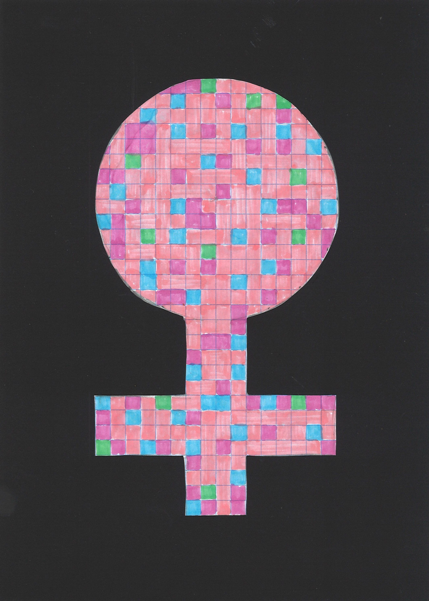

- Drawing
- The female symbol covers 26% of the page while the individual colors within the symbol represent women of color in the technology industry
- Green = Hispanic (1%)
- Purple = African - American (3%)
- Blue = Asian (5%)
- Co-CEO and CFO of Oracle Corporation, one of the largest software companies in the US
- Was the highest paid US female executive in 2015
- Ranked on the Forbes most powerful women list multiple times
- https://yourstory.com/2016/05/safra-catz-oracle/